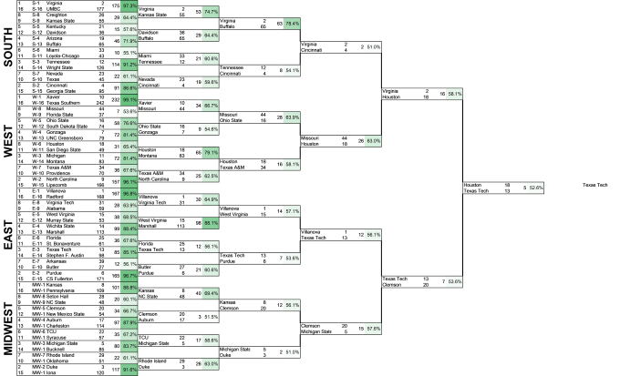
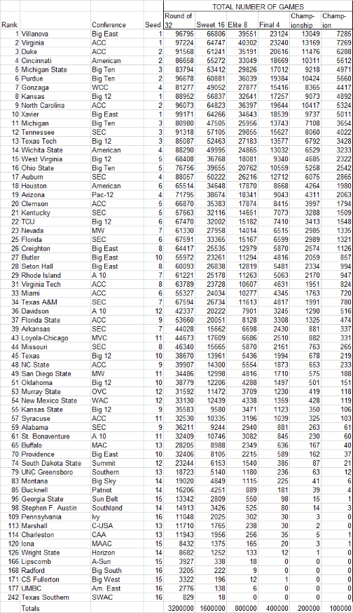

March 14, 2018
March Madness 2018 Simulator

Example of one possible iteration produced by this simulator
Updated Simulations for Each New Round:
- Round of 32
- Sweet Sixteen
- Elite Eight
- Final Four
- Championship Game
Schedule of Upcoming Games and TV channels
Every year in March, millions of basketball fans get amped for the thrill that is March Madness. Many will fill out brackets online hoping to hit pay dirt if they can achieve the ever elusive perfect bracket.
Some websites allow many entries, but each entry takes quite a bit of time to fill out if one is trying to think thoughtfully about the real probabilities of all of the teams winning their respective games. For instance, ESPN's Tournament Challenge allows each user 25 brackets. At 63 games each, this means a user would have to determine the winner for 1,575 games!
This year, I decided to write a program that would automatically fill out my 25 brackets based on given win probabilities. I thought, while I'm at it, why not run it over 100,000 iterations and analyze the results? Below you can see what I discovered.
For those of you asking why in the world I would want to do this or wondering if 100,000 iterations is overkill: Why?
For those of you that want to dig far deeper into exactly how I did all of this, you can read more about my methodology here: Methodology
But for those of you who are already saying, "Get on with it, and show me the results!", I will make you wait no longer:
Updates:
| Results (click any of the links below to change the image to the corresponding result type) | |||||
|---|---|---|---|---|---|
| By Team: | Games | % of Appearances in Each Round | Probability of Winning Each Round | % of Entries Remaining | |
| By Conference: | Games | % of Appearances in Each Round | Probability of Winning Each Round | % of Tourney Teams Still Remaining | % of Conference Teams Remaining |
| By Seed: | Games | % of Appearances in Each Round | Probability of Winning Each Round | % of Entries Remaining | |
|  |
This statistic is the number of times each team appeared in each stage of the tournament. Each team starts with 100,000 entries, but through each round some percentage of these get eliminated based on that team's probability of winning against its opponents. The last column shows the number of times out of 100,000 possible opportunities that a particular team won the National Championship. |